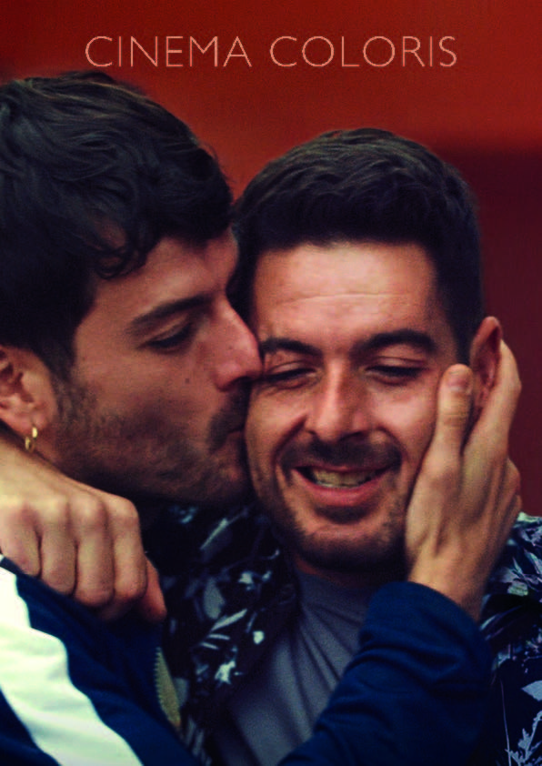

Por donde pasa el silencio (Sandra Romero, España, 2024), la ópera prima de su directora, es un film donde la manera de capturar las relaciones humanas remite al cine de Ingmar Bergman. En especial recuerda a El silencio (Tystnaden, Suecia, 1963), con la cual comparte más que la similitud con el título. Relaciones fraternales marcadas por los reproches y la enfermedad; y el silencio, la falta de comunicación. Un elemento físico que hace explícita la distancia entre las parejas de hermanos son las rejas. En la película de Bergman son las de la barandilla al pie de la cama donde la enferma yace postrada. En la de Romero son la del portón de la entrada de la casa, las jaulas de los perros, o la ventana. La forma de filmar dos rostros en un mismo plano, como de dos imanes que se repelen al acercarse, donde la armonía está ausente, se complementa y cobra sentido con la forma de separación antes expuesta.
Dentro del film, hay una serie de secuencias consecutivas que marcan el proceso de asimilación de Antonio (el protagonista) y descubrimiento de su rol respecto a su responsabilidad dentro del contexto que sufre su gemelo Javier. Se plantea como la película dentro de la película. Empieza cuando Antonio y María (la otra hermana) duchan a Javier al encontrarse mal tras una fiesta. A la mañana siguiente, Antonio y María hablan sobre la carga que supone su hermano, ella pide más compromiso y él rehúye. Los planos escogidos remiten nuevamente al director sueco al enfrentar frontales contra perfiles. Se muestra por un lado, un plano donde él aparece en primer término escorado a la derecha del cuadro, mirando hacia la izquierda, hacia ella. Por otro lado, en el otro plano, en primer término a la izquierda está el escorzo de ella. Mira hacia adelante, hacia su hermano, del cual se muestra un perfil suyo mirando hacia la derecha, en dirección opuesta a su hermana según esta perspectiva. Evidenciando de esta forma la sensación de ella de sentirse ignorada mediante esta subjetivación del encuadre.
En la siguiente secuencia aparecen de nuevo los tres. Se vuelven a hacer presentes las rejas con las jaulas de unos gallos de pelea. Javier coge a un gallo tuerto, se ve reflejado en él y en su tara. Las jaulas constituyen el refugio emocional que se ha construido el propio Javier, de ahí su afinidad con los animales. En la secuencia que sigue, están ambos gemelos arriba de un coche. Javier le muestra una radiografía suya, está mostrando mucho más que su mero interior físico. Antonio está sentado frente al volante, símbolo de responsabilidad y poder de decisión. Discuten acaloradamente mientras sus caras enfrentadas se comprimen en un mismo plano, rompen la separación que se autoimponen para terminar fundiéndose en un abrazo. Dentro del coche no hay rejas, pues es la misma jaula, ambos están dentro.
Lo siguiente que se muestra es una procesión de Semana Santa donde Antonio participa como cofrade. Aquí se hace explícita la idea de sacrificio. Ya de vuelta en casa, dolorido por el esfuerzo que supone la procesión, Javier le acaricia la espalda, le cuida. Se intercambian los papeles, comprende que debe dar para recibir.
La elección de la cámara en mano define en si misma a la película. Pese a usarse, los encuadres y los planos buscan la estabilidad, como si se buscara aparentar una normalidad que no existe, subraya una convivencia que puede llegar a ser tormentosa, definiendo así la relación entre los gemelos y también al propio Javier ignorando su propia condición.